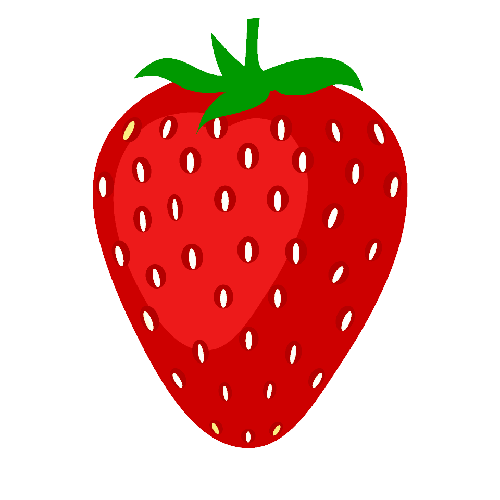
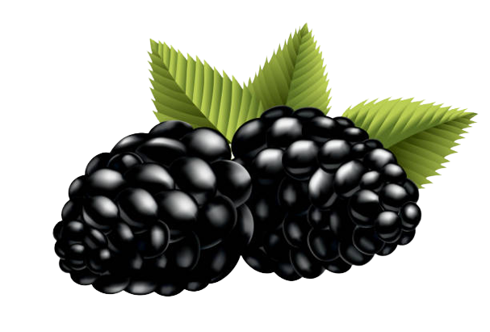
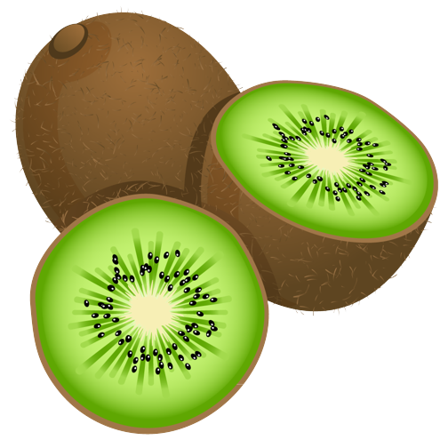

Banana
Bananas are a popular tropical fruit known for their distinctive yellow color and sweet taste.
They are botanically classified as berries and grow in clusters on large herbaceous plants.
Bananas are rich in essential nutrients such as potassium, vitamin C,
and dietary fiber, making them a convenient and healthy snack option for athletes and
individuals of all ages.
Taste drive

Coconut
Coconuts are tropical fruits with a hard outer husk, a tough shell, and a deliciously sweet, creamy flesh
inside.
They are widely known for their versatility, providing coconut water, milk, oil, and grated coconut for
culinary use.
Coconuts are a rich source of healthy fats, fiber, and essential minerals, making them a nutritious
addition to various dishes and beverages.
Taste drive
Strawberry
Strawberries are vibrant red fruits with a sweet and slightly tart flavor. They are a member of the rose
family and are known for their juicy texture and small seeds that cover their surface. Packed with
antioxidants, vitamins, and dietary fiber, strawberries are not only delicious
but also offer numerous health benefits.
Taste drive

Blackberry
Blackberries are succulent fruits that display a captivating deep purple color and a harmonious blend of
sweetness and tanginess. As members of the rose family, blackberries are recognized for their juicy
texture
and small, delicate seeds that adorn their surface. It burst with antioxidants, vitamins, and
dietary fiber./p>
Taste drive

Kiwi
Kiwi, also known as the Chinese gooseberry, is a remarkable fruit that captivates with its vibrant green
flesh, refreshing sweetness, and subtle tartness. Originating from China and now cultivated in various
parts
of the world, kiwis are small, oval-shaped fruits with a fuzzy brown exterior that encases a succulent,
emerald green interior adorned with tiny black seeds.
Taste drive
